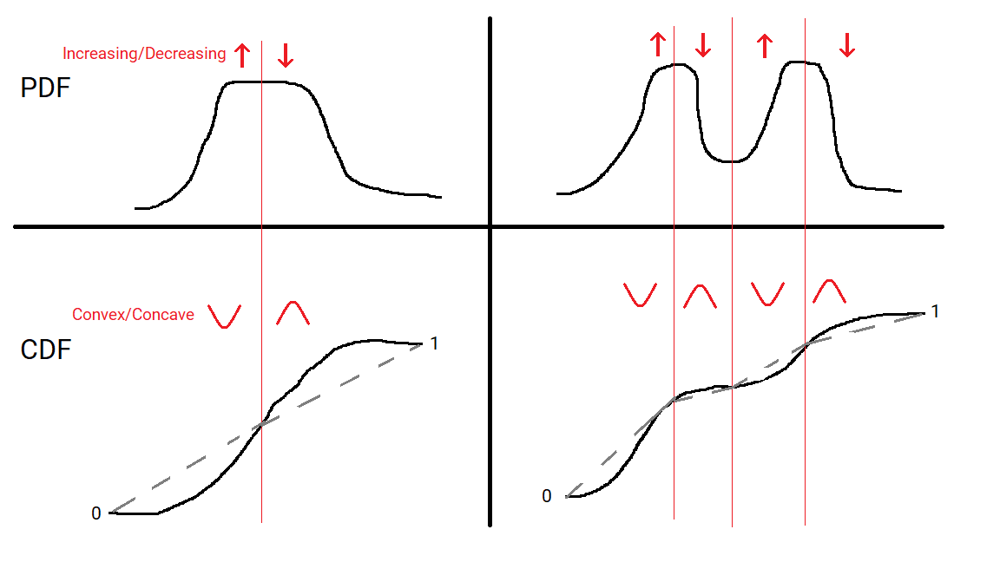

Dip Statistic for Multimodality
If you’ve got a distribution you may want a way to tell if it has multiple components. For example a sample of heights may have a couple of peaks for different gender, or other attributes. While you could determine this through explicitly modelling them as a mixture the results are sensitive to your choice of model.
Another approach is statistical tests for multimodality. One common test is Silverman’s Test which checks for the number of modes in a kernel density estimate; the trick is choosing the right width. Another test is Hartigan’s Dip Test which tries to estimate the distance between the Cumulative Distribution Function and the nearest multimodal function. This article tries to explain this dip statistic.
The method was first published in The Dip Test of Unimodality by J. A. Hartigan and P. M. Hartigan. The paper is moderately statistically involved, especially in the middle, but the overall idea is quite simple.
A unimodal distribution will have a Probability Density Function (PDF) that increases from 0 to some peak value and then decrease back to 0. If there’s a flat region there may be a range of points the mode is achieved at, but it’s a single interval. Its Cumulative Distribution Function at any point is just the area under the PDF between 0 and that point. When the PDF switches from increasing to decreasing then the CDF switches from convex to concave. A graph is convex means that any section of the curve lies below the straight line joining the endpoints, and conversely convave means that any section of the curve lies above the straight line joining the endpoints.

A multimodal distributions CDF will change from convex to concave and back again multiple times, because it’s PDF will change from increasing to decreasing and back again multiple times. The idea of the dip statistic is to measure how much we need to change the CDF to make it unimodal. In particular it is the maximum distance at any point between the CDF and the closest multimodal CDF. In other words the distribution can be deformed into a unimodal one by moving the CDF by at most the dip at each point, and the dip is the smallest number for which this is true.

Using the CDF rather than the PDF means this distance is bounded. The CDF goes from 0 to 1, as the cumulative probability goes from 0% to 100%. This means the dip must be less than 1 (probably quite a bit less). Contrast this to the PDF which is unbounded.
It also intuitively makes sense; the bigger the dip the greater the difference between them. The dip is related to the difference between the greatest area between the PDFs at some point. In a sense it measure the greatest depth and width change from a unimodal distribution.
In practice we only have a finite sample from the distribution. The statistic is calculated on the empirical CDF; that is a step function with a step up of 1/N wherever there is a datapoint for each of the N data points). They use the analogy of trying to fit a string around a deformation of the empirical CDF. I won’t go into the computational details here, but this can be calculated efficiently.
Finally to work out significance they need to pick a “null” model. They choose a uniform distribution; that is one with a flat CDF. This makes intuitive sense because adding arbitrarily small noise to a uniform distribution could turn it into a multimodal distribution. It’s going to be quite hard to judge if a uniform distribution is multimodal; harder than most general cases.
If you need to do multimodal detection it’s worth considering Hartigan’s dip test. It’s got a reasonable theoretical footing, is computationally efficient, and is implemented in the R diptest package.